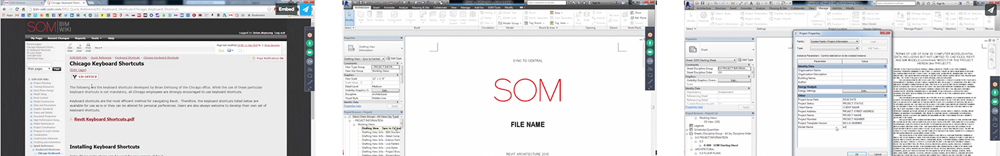
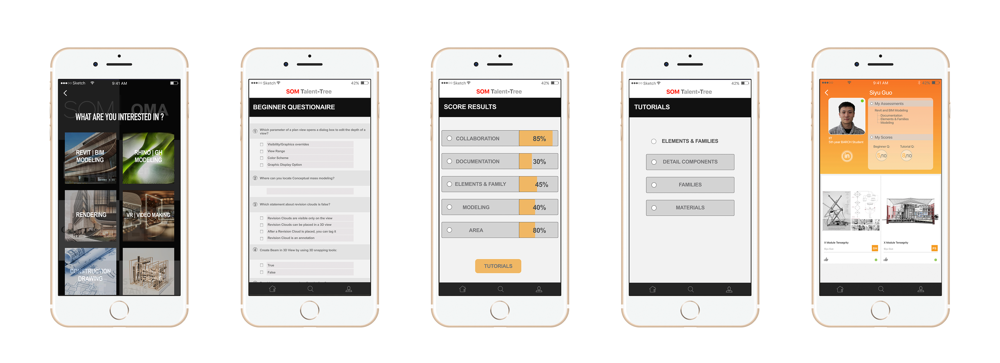
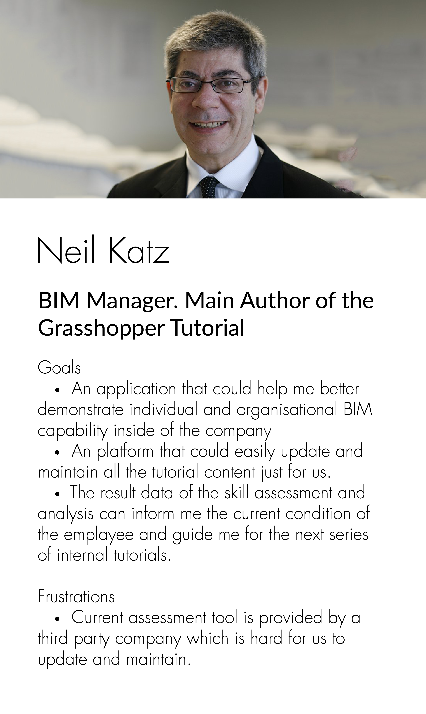
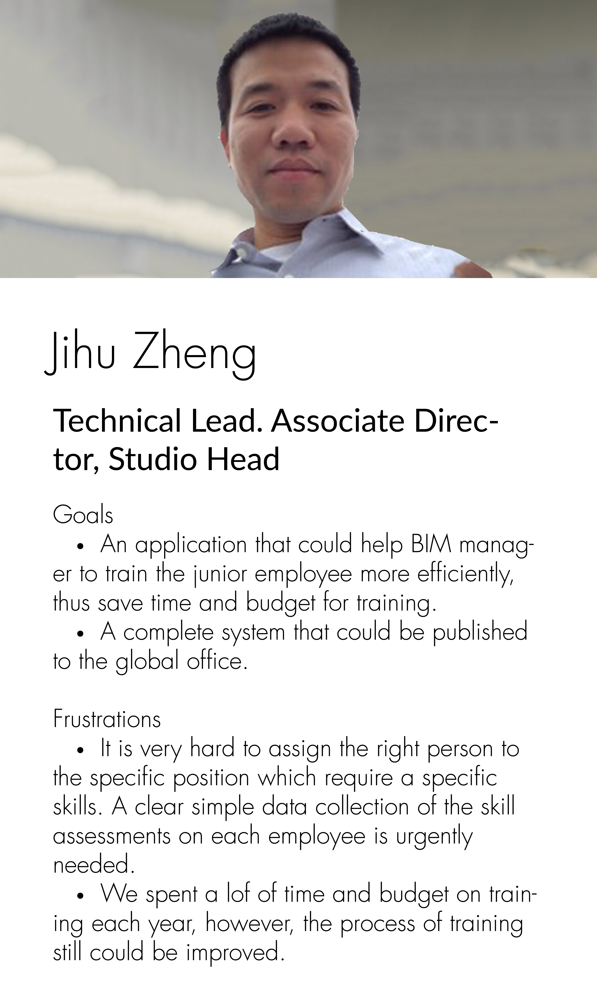
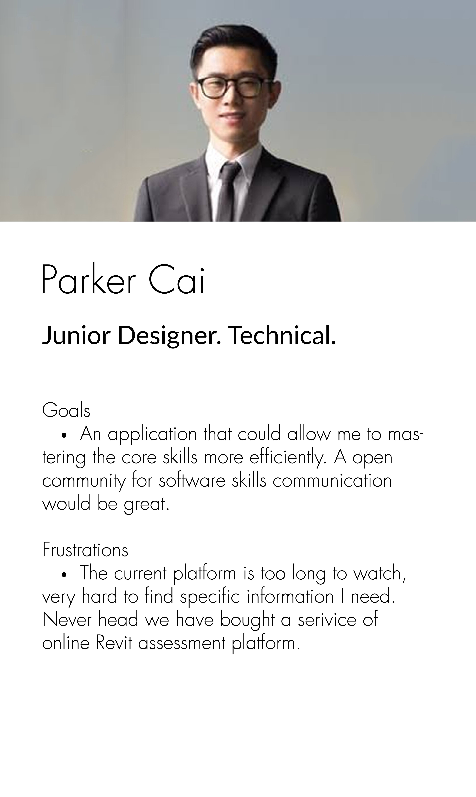
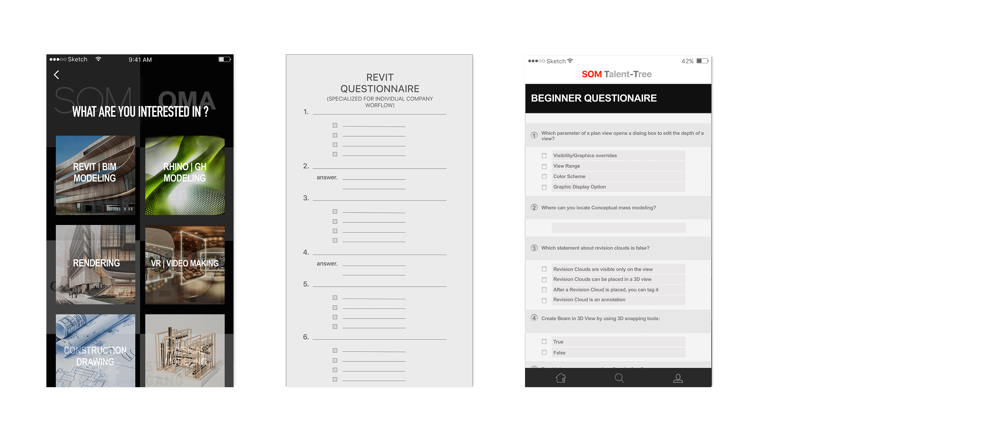
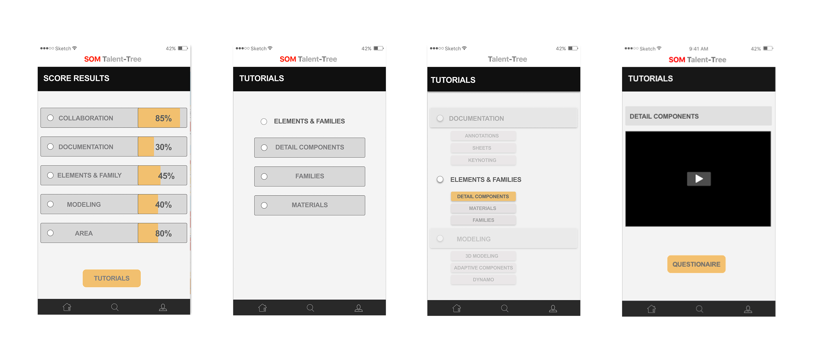
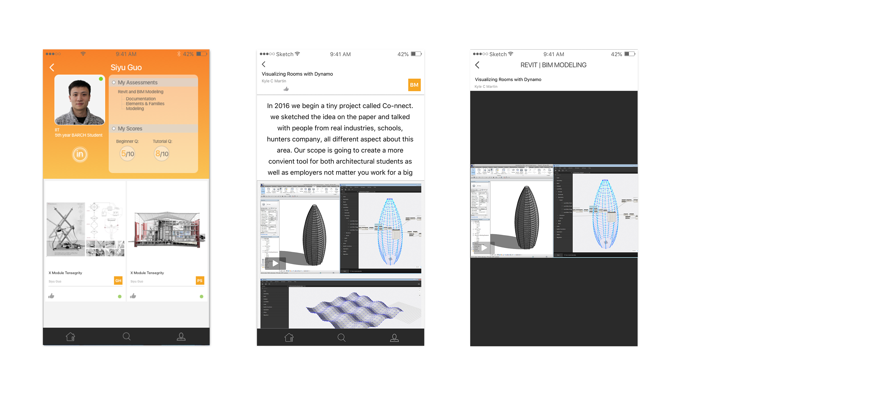

In winter 2017, I worked at Skidmore, Owing &s; Merrill headquater in Chicago as a Architectural Designer and Researcher. I was proposed a BIM skill assessment product which aiming at helping BIM managers to efficiently teaching Revit skills and easily spread out the SOM's most updated Revit modeling standards among the global office.
I worked with architects, BIM managers, studio heads to brainstorming & prototyping a new web & mobile application to accelerate the training process of Revit skills.
Design Challenge -
Accelerating BIM modeling Skill Training
The current SOM internal Revit tutorials was built 1 year ago upon several 1.5 hour long videos on vimeo. Revit itself and SOM drawing standards has evolved a lot since then, dynamo 2.0 comes out during the time, making some of the functionalities and instructions in current video series redundant and outdated. The video was too long for each which is very hard for the users to get the specific information they want efficiently.

Outdated video tutorials on vimeo
This is why SOM talent tree project is brought up by our team to accelerate the learning process and help junior designer align with company's modeling standard in a most efficient way. Our team is also hoping that SOM talent tree can become the uniqle assessment tool that will help BIM managers to understand each designer's modeling knowledge blind area so they can provide help.
Solution Overview
To better provide the internal BIM skill assessment service, I came up with a mobile app with the features of a dashboard, an questionaire, an online forum, and a device management page
SOM Talent-Tree is an app that helps junior employees training their Software skill more efficiently in the company's context by providing first-hand tutorials from internal BIM manager. It also helps the leadership to monitoring employee's hardskills, and creating an online community for bothside to share information.

Screens of Mobile Interface
The Research
To better understand my design challenge and the problems junior desigenr and their supervisor are facing in company,
I kicked off my research on looking into what is already out there and understanding what junior designer and leadership really need out there.
Understanding Users
By interviewing BIM manager, studiohaed and leadership, Project manager as well Junior designer, I wrote down a list of features that these four group of people care most about. The junior user wants a application that is including meanning questions, short and clear video tutorials, while the leadership care most about the amount of works and budget that company should be put on.



Markerting Research
Based on the interviews, I collected the important features my interviewees mentioned. Starting from those features, I chose two apps as competitors. One of them is the autodesk University while the other one is our current BIM skill assessment out-source partner called BIM Knowledge.

Design Details
Choose Program & Questionnaire
Users can view current series of questionnaire and pick one of them to start.

Score & Tutorials
After one finished one section of questionnarie, you will see the result and analysis immediately.

Personnal Page and information
A information page that display your performance and amount of the projects you have been done inside of SOM.

Prototyping
I created a working prototype in Flinto to demonstrate the functionalities and design of interactions.
Here is the snapshot of the prototype.
Dashboard Interactions
Parents can view current air quality, air forecast, and tips to prepare for their children. They can also control connected devices on the dashboard.